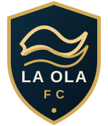

LA OLA FC · JONATHAN LIZARDI
—#4LIVE TABLE
3–2Record
218Fantasy pts
9League pts
36Latest GW
GW5 · Red Devils of SD 40 — 36 La Ola FC

LA OLA FCFANTASY PREMIER LEAGUE · 26/27 ← CLUB SITEFPL DRAFT · LIVE SEASON CENTER
Fantasy Premier League 26/27. Twelve clubs. Head-to-head. Every gameweek becomes part of the record.
FPL DRAFT · LEAGUE HQ · LIVE SEASON
The magazine made the call before GW1. This is where the season answers back — live table, weekly matchups, La Ola FC, records and the growing archive.
Connecting to league data…
LA OLA FC · JONATHAN LIZARDI
—MAGAZINE vs REALITY
Fantasy Reimagined put La Ola FC at the top of the preseason board. The live table now gets to grade the call every week.
See the preseason board →LIVE TABLE
| RK | Club | Manager | W–D–L | LP | PF | PA | Δ |
|---|---|---|---|---|---|---|---|
| 4 | La Ola FC | Jonathan | 3–0–2 | 9 | 218 | 186 | — |
GAMEWEEK CENTER
Loading all six matchups…
LEAGUE STATISTICS
LA OLA FC
Roster will populate from Draft ownership data.
THE LONG GAME
The current league is marked as renewed. The archive is wired to preserve verified predecessor seasons as they are recovered — champions, final tables, old team names, La Ola history and all-time head-to-head — without inventing what cannot be verified.